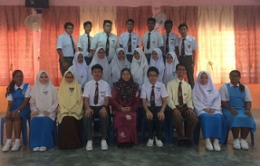
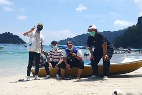
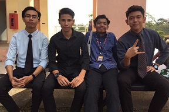
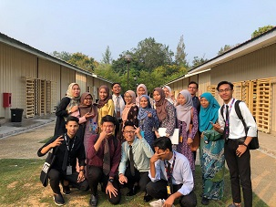

Friendship Appreciation
In this section, I would like to express
my appreciation towards my friends whom has enlighted and making my life journey becoming wonderful
Back to Memories

5 Graphic
This photo was taken in 2017
It was the first time for me to become class represantative

Short Vacation @ Pangkor Island 2020
This photo was shot at the Pangkor Island
It was a great short getaway after the end of semester 3
We also going around at Ipoh, Perak
There are just 4 of us going to the trip
Syamiel, Me, Naufal, and Syahmi

Post Final Examination Semester 2 in 2019
This photo was taken at Courtyard at UiTM Kedah
It was a last picture of us before Covid-19
Many of our classamtes have left early that time
Azfar, Afif, Aus, and Myself

Post ELC151 Class in semester 2, 2019
This photo was taken at cabin class
This was the complete picture of our classmates
Right after that we go to the stall to find something to eat
Follow me for more information